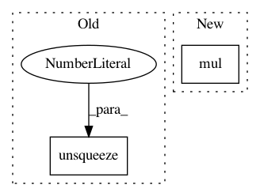

809d0e5b52561fefd3b0d98c08d3cbb175d7e706,onmt/modules/Util.py,LayerNorm,forward,#LayerNorm#Any#,35
Before Change
if z.size(1) == 1:
return z
mu = torch.mean(z, dim=1).unsqueeze(1)
sigma = torch.std(z, dim=1).unsqueeze(1)
ln_out = (z - mu.expand_as(z)) / (sigma.expand_as(z) + self.eps)
ln_out = ln_out * self.a_2.expand_as(ln_out) \
+ self.b_2.expand_as(ln_out)
return ln_out
After Change
mu = mu.unsqueeze(1)
sigma = sigma.unsqueeze(1)
ln_out = (z - mu.expand_as(z)) / (sigma.expand_as(z) + self.eps)
ln_out = ln_out.mul(self.a_2.expand_as(ln_out)) \
+ self.b_2.expand_as(ln_out)
return ln_out
In pattern: SUPERPATTERN
Frequency: 3
Non-data size: 2
Instances
Project Name: OpenNMT/OpenNMT-py
Commit Name: 809d0e5b52561fefd3b0d98c08d3cbb175d7e706
Time: 2017-07-04
Author: sasha.rush@gmail.com
File Name: onmt/modules/Util.py
Class Name: LayerNorm
Method Name: forward
Project Name: cornellius-gp/gpytorch
Commit Name: 10cb719041b531cb25e485f928ccb545a475a71a
Time: 2018-09-13
Author: gpleiss@gmail.com
File Name: gpytorch/kernels/periodic_kernel.py
Class Name: PeriodicKernel
Method Name: forward
Project Name: cornellius-gp/gpytorch
Commit Name: 246cc451325456fe2a0351363894d51045367b69
Time: 2017-11-27
Author: gpleiss@gmail.com
File Name: gpytorch/likelihoods/bernoulli_likelihood.py
Class Name: BernoulliLikelihood
Method Name: log_probability